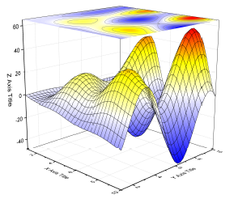

Oberfläche mit Farbabbildung und Projektion
Color-Map-Surface-Projection
Datenanforderungen
- Arbeitsblatt: Markieren Sie eine Z-Spalte (oder einen Bereich einer Z-Spalte). Falls die Z-Spalte verbundene XY-Spalten besitzt, werden die XY-Spalten verwendet; ansonsten werden die XY-Standardwerte des Arbeitsblatts verwendet.
oder
- Matrix: Eine Matrix von Z-Werten
oder
- Bild: Die aktive Seite eines Bildfensters
Diagramm erstellen
Aktivieren Sie das Matrixblatt/Bildfenster oder markieren Sie die gewünschten Daten im Arbeitsblatt.
Wählen Sie im Menü .
oder
Klicken Sie auf die Schaltfläche 3D-Oberfläche mit Farbabbildung und Projektion auf der Symbolleiste 3D- und Konturdiagramme.
Vorlage
glCMAP.OTP (im Origin-Programmordner installiert)